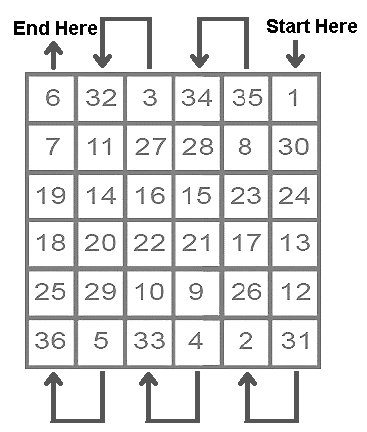

Sadly, because of the massive destruction of spiritual knowledge, the true way to
use these has been destroyed and corrupted. Given several different sources,
each presented a lame explanation of these powerful squares on how to correctly
use them. Corrupted Western occultism instructs taking the
numbers and converting them [according to the Hebrew version of numerology]
into their versions of 'sigils.'
Other sources from books on mantras [from Far Eastern authors] instruct to 'draw
the planetary square on a piece of paper and carry it with you.' Other sources
pretty much echo these two examples. It is glaringly obvious that is not the
correct way to use these.
On 11/28/10, Demons gave me the real formula for using these powerful
squares. First, they are called 'Kabalistic Squares.' Now, most of you know the
TRUE Kabalah is for making use of the chanting of sound and vibration to invoke
certain energies and/or to produce certain desired results in the material world.
So, both of the above from popular sources is obviously bullshit explanations at
trying to replace the loss of true spiritual knowledge.
In studying from Eastern sources, I have found that these squares are included in
books that have mantras [mantras are words of power], BUT there are no real
instructions on how to effectively use them. It is a given that certain mantras
are to be recited a certain number of times for a certain number
of days and so forth. Point being, this is what a Kabalistic/Magickal Square
reveals.
The Kabalistic/Magickal Square reveals a certain sequence for the recitation of a
specific mantra. These workings are the most powerful I have ever done, and are
not for those who are new to meditation. They can generate an extreme amount
of energy, especially in the chakra the particular square represents. All of your
chakras should be open, in having performed the chakra opening meditations on
the Joy of Satan Meditation webpage.*
The energy seems to build and becomes exceptionally strong about halfway into
the working. It is imperative not to skip any days in the working, as this will ruin
the entire working and you will have to start over again. It is also very important
that you are exact and precise in the number of repetitions given for each day.
For example:
The following day, you would recite the specific solar mantra you are using a total
of 2 times; the next day 4, and so on until you reach the sixth day where you
would vibrate the mantra a total of 36 times and the 7th day, you would switch to
the immediate above row and vibrate the mantra 25 times, then the following
day, 29 times and so forth, ending on the 36th day at square 1, where you would
vibrate the mantra only once, as instructed in the square.
Sun Square, you would want to begin the mantra when the Sun is strong, either
in its sign of exaltation [Aries] or home sign of Leo. NEVER do any solar rituals or
work when the Sun is in Libra [sign of its fall] or Aquarius [sign of its detriment].
All solar rituals and workings for the Sun should be started on a Sunday [day of
the Sun] and during the hours of the Sun. You can find the hours of the Sun by
downloading the Chronos Program which is
indispensible.
The Sun working should ideally be started during daylight hours
when the Sun is high in the sky and strong, like between 10:00 am and 14:00 [2
pm], if possible.
Each day, the mantra chosen for the Sun should be recited during the hours of
the Sun.
These are standard Sanskrit Mantras that have been used for thousands of
years. You should feel the energy almost immediately.
When you are finished with the vibration, if you are working on tangible prosperity
[non-spiritual] goals, it is important to direct the energy you raised by stating an
affirmation several times while visualizing your goal in the present reality and
present tense.
These workings should be performed, both the spiritual and the material, before
and during hard Saturn transits to strengthen the planet/s being hit and also to
offset the misfortune caused by Saturn.
For many years, I have come across the use of 'Kabalistic Squares' sometimes
called 'Magical Squares.' Truth be known, these like nearly everything else of the
occult, originated in the Far East.
In using the Kabalistic Square of the Sun, one would want to recite a mantra for
the Sun six hundred and sixty-six times, as this is the total sum of the numbers of
the Square of the Sun. The mantra would be recited/vibrated a number of times
for a period of 36 days, as there are 36 squares for the Sun.
KABALISTIC/MAGICKAL SQUARE OF THE SUN FOR EMPOWERING CHAKRAS,
STRENGTHENING A DEBILITATED SUN, AND FOR HELP IN HEALTH AND OVERALL
SPIRITUAL ADVANCEMENT RELATED TO THE SUN
So as in the illustration for
the Square of the Sun at
right, you would begin on
the first day with vibrating
the mantra 31 times for
that day. You begin in the
lower right hand corner of
the square and go from
right to left, then shift from
left to right in the next
row, as the arrows
illustrate.
KABALISTIC/MAGICKAL SQUARE OF THE SUN FOR MATERIAL SUCCESS,
PROSPERITY, AND EARTHLY [NON-SPIRITUAL] AFFAIRS

For material success, prosperity, and
progress in earthly [non-spiritual]
affairs, the mantra should be recited
from top to bottom as shown in the
example square of the Sun at left.
You would begin on the first day with
vibrating the mantra 1 time
for that day. You begin in the upper
right hand corner of the square and go
from top to bottom- 1, then the next day
30, the third day 24, fourth day 13, fifth
day 12, sixth day 31, then the next day
on to next row, as the arrows illustrate
with 2, the next day 26 and so forth,
ending on the 36th day at square 6,
where you would vibrate the mantra 6
times, as instructed in the square.
In continuing the example for using the
*While there are some texts and doctrines that claim the third chakra is ruled by the planet Mars, we disagree. The reason being is that the root [Bija] mantra/vibration for the third chakra has always been RA/RAM, which is a variation of 'RA' as in AMON RA, the Egyptian God of the Sun. The word 'God' is also a term for the chakras.
CLICK HERE FOR THE INDEX OF PLANETARY SQUARES
BACK TO SATANIC POWER MEDITATION MAIN PAGE
© Copyright 2011, Joy of Satan Ministries;
Library of Congress Number: 12-16457